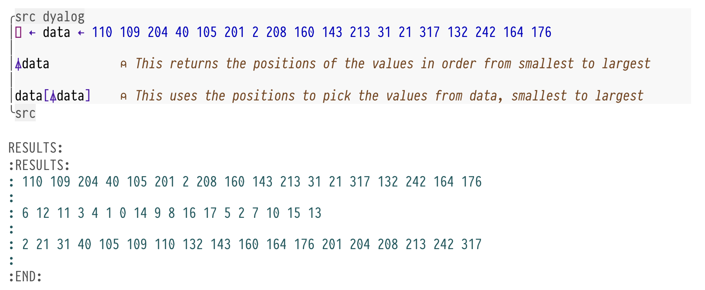

Foreword
This article goes in assuming that you've read and have performed the steps found here
This article will show how to get further niceties using
APLinorg-babelsource-blocksI've been using this to learn
APLusing literate programming, the same as a jupyter session, but in emacsThis could also be used to write books and articles easily without needing to copy/paste output from
RIDEIt will improve on that article in these aspects:
Glyph input :: Using
dyalog-apl-inputfrom =dyalog-mode=Proper fontification :: previously I just had to turn off
mixed-pitch-modeand have everything monospace, including prose (not good)Syntax hilighting :: Also using
dyalog-mode
Package installation
There's only one package to install,
dyalog-mode(here)Follow the installation steps in the
README, then come back here to set up the functionality for org source blocks
Configuration
Now that
dyalog-modeis installed, we can trickorg-babelinto giving us syntax hilighting fromdyalog-mode, but execute usingjupyter-apl(through theAPLJupyter kernel installed in my previous article)When you enter the language for a source-block,
org-babelinfers what major-mode the code would normally run inIf you enter
racket, say, as the language for a source-block, iforg-src-fontify-nativelyis non-nil the functionorg-src-font-lock-fontify-blockwill spawn a buffer with the inferred major-mode (racket-mode) and display the block with the same syntax highlightingFrom this you also get language-aware indentation and some other things the major mode provides
We will use
dyalogas the language for our src-blocks, but sincedyalog-modedoesn't let us execute those blocks, we will do that usingjupyter-aplWe will create two 'cloned' functions that will run when we hit
RETinside ourdyalogsrc-blocks. They will calljupyter-aplto do the executionHopefully that explains the thought behind the following code we need:
(use-package! ob-eval
:config
;; Here are our cloned functions
(defun org-babel-execute:dyalog (body params)
(org-babel-execute:jupyter-apl body params))
(defun org-babel-dyalog-initiate-session (&optional arg1 arg2)
(org-babel-jupyter-apl-initiate-session &optional arg1 arg2))
(setq org-babel-default-header-args:jupyter-apl '((:kernel . "dyalog-kernel")
(:session . "*new*")
(:exports . "both")
(:eval . "never-export"))
;; copy jupyter-apl settings for `dyalog' blocks - which are really
;; jupyter-apl blocks with `dyalog' syntax hilighting
org-babel-default-header-args:dyalog '((:kernel . "dyalog-kernel")
(:session . "*new*")
(:exports . "both")
(:eval . "never-export"))))
As for using
dyalog-apl-input, I just enable that manually for now usingset-input-methodIf you can't see
dyalog-apl-input, just callload-libraryorrequireit in your config
Result
Here's what you should see when you create
dyalogsrc-blocks in your.orgfiles now:

To be clear, you need to enter:
#+begin_src: dyalog <insane APL stuff> #+end_src
The fancy hiding/presentation is from
org-modern(here) andorg-modern-indent(here), thank you to Daniel Mendler (minad) and jdtsmith for those wonderful packagesAlso thanks to Joakim Hårsman for
dyalog-mode, Dyalog company fordyalog-jupyter-kerneland to all the excellent people working onorg-modeand emacs
Conclusion
I've been struggling with creating a comfortable environment for hacking on APL, but I think it's finally here
Of course we could just save all this time and these years of yak-shaving by simply using Jupyter, but where's the fun in that?